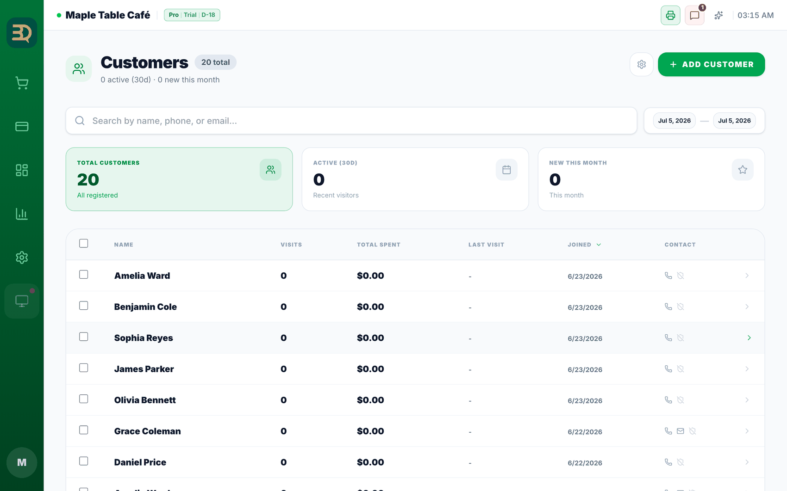
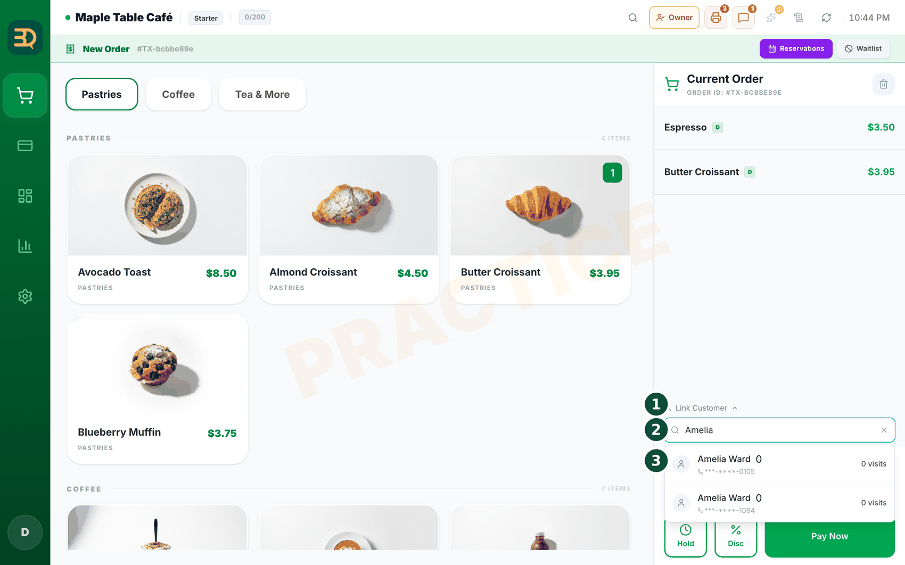
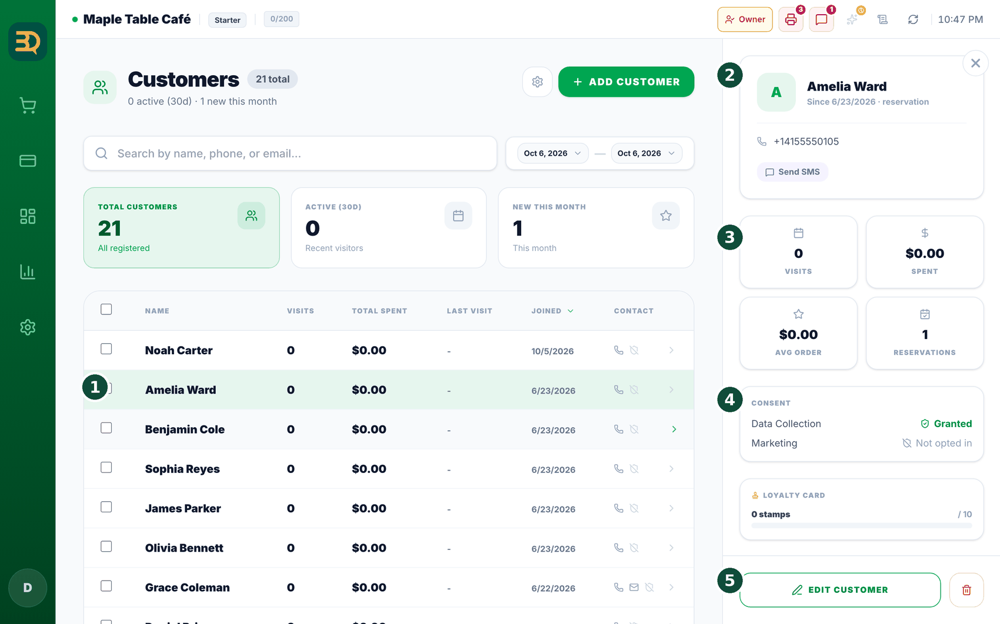
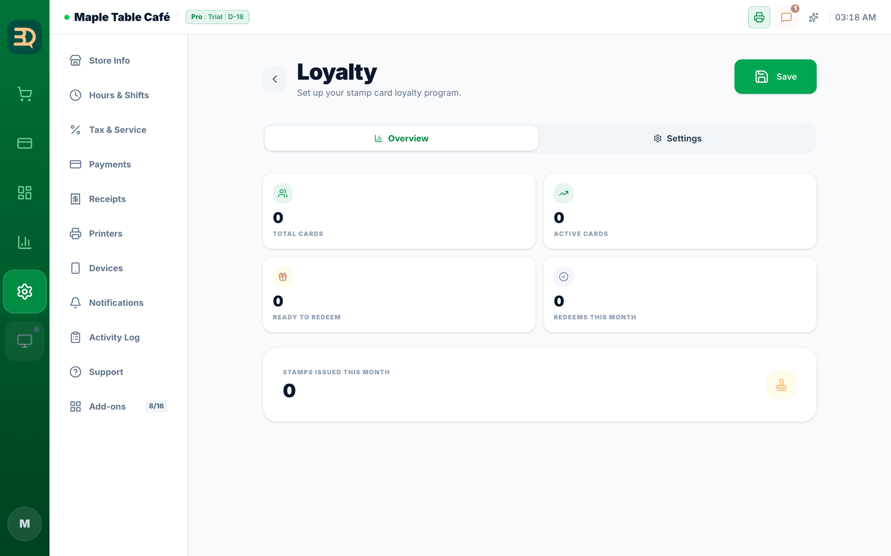

17Clientes y fidelización
Esta parte ayuda a que sus clientes vuelvan. BrewDesk crea solo una lista de sus clientes, y usted puede premiar a quienes vuelven.
Active los sellos de fidelización en Settings › Add-ons › Loyalty / Stamps (un complemento Pro); primero necesita CRM/Customers activado (toque Enable Both (Activar ambos) si se lo pregunta). Para la fila, active Settings › Add-ons › Waitlist (primero necesita Tables (Mesas) activado).


- Simplemente tome pedidos como siempre. BrewDesk crea en silencio una lista de clientes a partir de esos pedidos.

- Toque el nombre de un cliente en cualquier momento para ver con qué frecuencia ha venido.
- ¿Quiere premiar a los habituales? Active los sellos de fidelización. Esto le da a cada cliente una tarjeta de sellos digital (como una tarjeta de café en su teléfono).
- Los clientes ganan un sello en cada visita. Después de juntar suficientes sellos, reciben un premio, como una bebida gratis.
- ¿Hay fila? Use la lista de espera para llevar la fila y luego envíe un mensaje cuando una mesa esté lista.
Su lista de clientes crece sola. Sin papel y sin escribir nombres. Cada pedido suma en silencio a su lista de habituales y a su historial de visitas.
Sellos de fidelización
Cómo configurarlo y cómo se ganan. Una tarjeta de sellos en el teléfono. Cada visita da un sello; con suficientes sellos se gana un premio. Así se configura y se usa.

- Configúrelo. Abra
Settings › Add-ons, ponga la tarjeta Loyalty / Stamps (Fidelidad / Sellos) en ON y toque el botón Settings (Configuración) de la tarjeta. Se abre la pantalla Loyalty (Fidelidad) con dos pestañas: Overview (Resumen) y Settings (Configuración). Defina el número de sellos y el premio en la pestaña Settings (Configuración). - Elija cuántos sellos dan un premio (Stamps Required (Sellos requeridos), por ejemplo 10).
- Elija el premio, un Free Item (Artículo gratis) o un "% Discount", y póngale un nombre.
- Elija cuánto dura el premio y toque Save (Guardar).
- Cómo gana un sello un cliente: al tomar su pedido, toque Link Customer (Vincular cliente) y elíjalo (o agréguelo). Cuando se paga el pedido, recibe un sello.
- Canjear un premio: cuando tiene suficientes sellos, aparece un premio en su siguiente pedido; toque Use Reward para descontarlo de la cuenta.
Temas relacionados
¿Necesita más ayuda?
Puede enviar un ticket de soporte desde la app en Settings › Support.